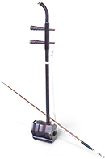
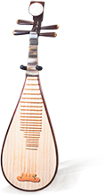

Perfect Father's Day Gift
Every day is Father's Day when you bring Dad to experience a concert experience like no other!
Before July 1, buy two tickets* and receive
one complimentary bottle of wine
your choice of Chanson Bourgogne Pinot Noir or
Josef Drathen Gewurztraminer
*for tickets price $69 and above
Please email your ticket purchase confirmation to info@torshow.com to receive a pick-up voucher at Roy Thomson Hall on concert day. First come first served.
To enjoy this offer and other benefits
Membership is free
Exquisite Chinese instruments in a grand Western orchestra. Shen Yun Symphony Orchestra blends Eastern and Western musical traditions in a concert experience unlike any other. Majestic movements convey tales of divine beings descending to Earth. Lilting notes evoke the elegance of ladies at imperial court. Traditional dance rhythms from Tibetan plateaus reverberate through the concert hall. Shen Yun performs soul-stirring original works, with solos by the world’s top Chinese tenors and sopranos. Concert highlights also include Western masterpieces by Tchaikovsky, Rimsky-Korsakov, Sarasate, and Mahler.
The Emperor Journeys to the Moon
Year: 712 C.E. Place: the great Chang'an, meaning "eternal peace." This is the capital city of the Tang Dynasty, the most glorious and prosperous of all dynasties throughout China's 5,000 years.
Imagine you're an Emperor. After a tiring day of state affairs you've had more than one glass wine. You take one look at the Moon and you are well on your way to dance with the fairies. As you ravel in their beauty notice the intricate melodies of Pipa fill your heart with delight and peace.
of Shen Yun recorded at
its Carnegie Hall concert
Concert Notifications
Ticket Gieaways
Special Offers
-

Erhu only has two strings, been around for 4000 years, 100% soul.
Erhu Clip - Dancing for the Divine Download -

Pipa has been the “king” of Chinese folk instruments for thousands of years.
Pipa Clip - Emperor Journeys to the Moon Download